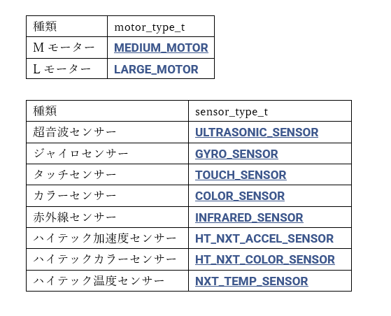

1 |
2 |
3 |
4 |
5 |
6 |
7 |
8 |
9 |
10 |
11 |
12 |
13 |
void config(){
ev3_motor_config(0,MEDIUM_MOTOR );
ev3_motor_config(1,MEDIUM_MOTOR );
ev3_motor_config(2,MEDIUM_MOTOR );
ev3_motor_config(3,MEDIUM_MOTOR );
ev3_sensor_config(0,COLOR_SENSOR );
ev3_sensor_config(1,COLOR_SENSOR );
ev3_sensor_config(2,COLOR_SENSOR );
ev3_sensor_config(3,COLOR_SENSOR );
}
※A,B,C,DのポートにMモーター、
1,2,3,4のポートにカラーセンサーを取り付けたものを用いる
この関数は、モーターとセンサーの設定をまとめてする関数。
main_tsk()の先頭に入れて、モーターとセンサーの設定を行う。
この例ではMモーターとカラーセンサーのみだが、場合に応じてev3_motor_config()とev3_sensor_config()の引数を変える必要がある。
